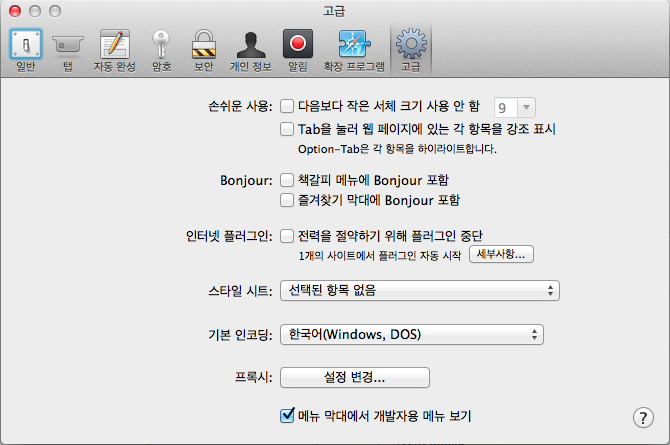

Safari 전원 절약
아무래도 Safari7은 flash랑 여러모로 안친한 것 같다.
플래시 플러그인을 샌드박스 구조로 작동시키면서 발생한 이슈도 대응하느라 한참 애먹었었는데..
"Safari 전원 절약"이라는 기능이 또 있었다.
현상은 이렇다.

플래시가 바로 실행이 되지 않고 한번 클릭을 해야만 실행이 된다.
항상 나타나는 현상은 아니고 특정 요건이 되어야 나타나는 현상인 것 같은데.. 경험적으로는 핫스팟을 사용할때 더 잘 발생을 하는 것 같다.
이게 보통의 플래시 컨텐츠라면 별 문제가 될 것 같지는 않은데.. ( 사용자가 한번 더 클릭을 하면 되니까. 예전 이올라스 때처럼. )
사용자에게 보여지지 않는 swf라면 문제가 좀 될 것 같다.
보여지지를 않으니 사용자가 클릭을 할 수가 없으니까.
이 경우 해결책은 사용자가 직접 Safari의 환경 설정 / 고급에 들어가서 "전력을 절약하기 위해 플러그인 중단" 항목의 체크를 해제해야만 한다.

자꾸 고객 대응으로 해결해야만 하는 이슈가 늘어가는 것이 영 달갑지가 않다.